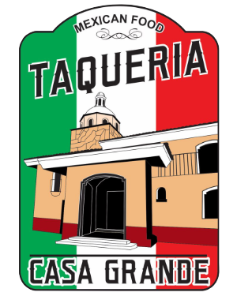
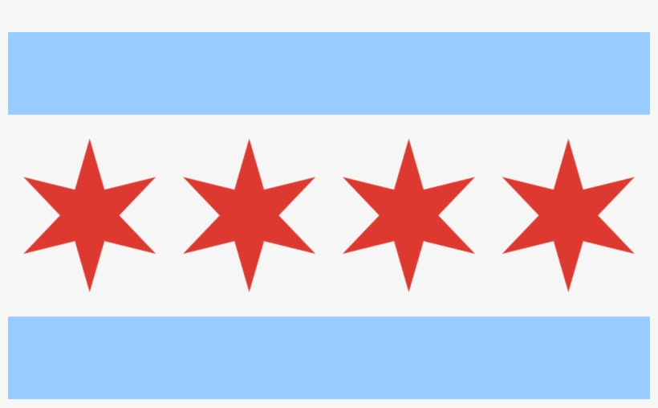

Greg's Favorites




I know what you’re thinking, there’s a bird blocking the sun. Well I know. I could’ve taken one without the bird but you see this photo would be so much more difficult to replicate that to me it's a perfect picture and I love it. Anyways, hello everyone my name is Gregorio Barbosa but most people call me Greg. I’m a first generation Mexican-American (Both parents are from Jalisco, Mexico) born in Joliet, Illinois in 1995. Thank you for taking the time and looking at my website. I hope you enjoy learning a bit more about me and if you haven’t also check out my work and education section.
As I mentioned, I was born in Joliet, Illinois and lived there until I was around 6 years old, after that we moved to Berwyn,IL and eventually to Cicero, IL where I currently have spent most of my life so far. Since we moved around a bit I went to a total of about 13 different schools in my lifetime so I'm very used to being in a new environment and meeting new people.
Growing up outside of school, I loved watching and playing soccer. Whether it was with my friends at the park or playing with a team. I actually liked it so much that when I was in community college I did coaching for a U16 team and got to experience the sport in a different way. Now in days pre covid I was still playing and hope to continue playing post pandemic.
Another big part of my life is technology, I have always loved tech since as long as I can remember. When I was around 10 years old I remember taking apart electronics just to see what is inside of them, sadly those toys would never be put back together. I always knew that I wanted to do something with technology which throughout my career you can see I did just that, working at Best Buy to see the latest tech products, working IT, and where I am today as an Application Developer making this website. I’m very happy and passionate with what I do.
As I look into the future, I want to do a lot more traveling. I have visited a couple of cities in the United States, Mexico, and Canada. Let me tell you there is a lot to see out there and just seeing how other people live inspires me and gives me ideas. Once the pandemic is over I will focus on travelling more overseas and experience that feeling of culture shock that I love so much.
For now and forever I will continue to learn and create new projects that I can share to the world, and I want to thank everyone who has helped me get to where I am today and thanks to everyone who read through this snippet of my life and down below are some of my favorite brands and franchises. If you want to get in contact with me go ahead and go to the contact page and send me a message, I’d love to hear from you!